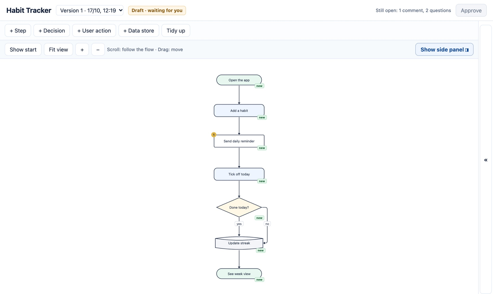
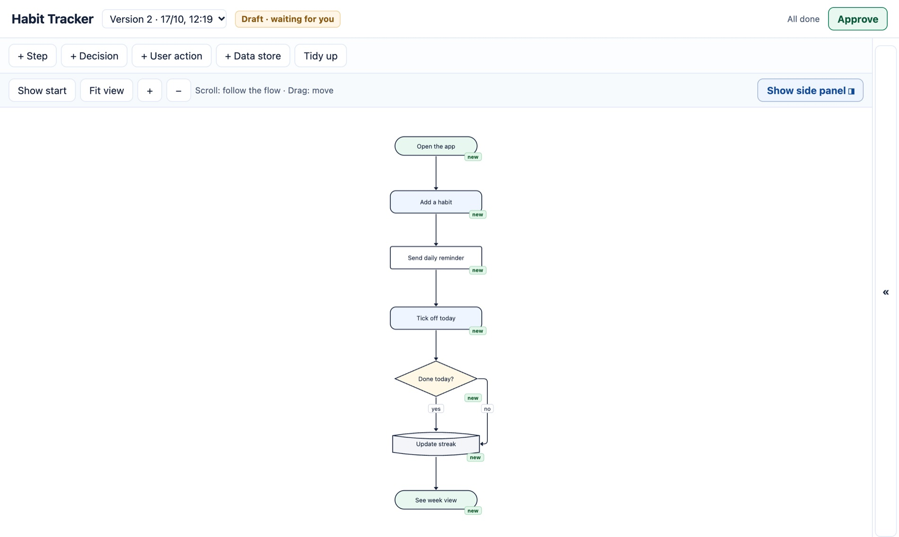

Describe your task
You type it into your Claude Code terminal, in plain words.
>
Claude: Planning first. Drawing the flow for you to review…
Claude turns it into a flow
A draft: every block has short, testable requirements. New parts are marked. Approve is still locked.

Claude has a question here — click
Answer Claude's questions
Claude asks instead of guessing. Pick an answer for both questions.
QUESTIONS
Should a streak survive one missed day per week?
iPhone only, or Android too?
2 questions open — Approve stays locked.
Claude updates the plan with your answers → Version 2
You approve
Claude worked your answers into Version 2. Nothing is open any more. Only you can press Approve. Click it.

Click Approve
Claude builds the app
Exactly the approved version, in your Claude Code terminal. A failed review or test goes back to coding.
Code✓
→
Independent review✓
→
Test✓
→
Commit✓
→
Your app
That's Virtuv.
Free and open source for Mac. Uses your own Claude Code subscription.
Get it on GitHub